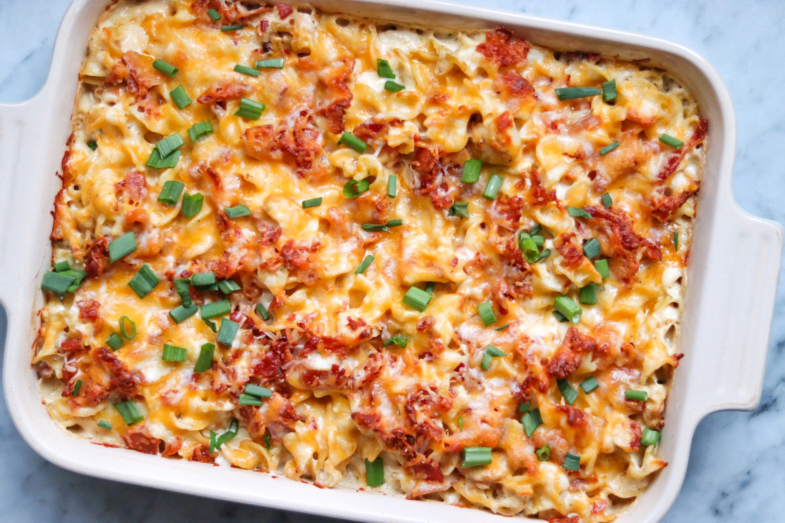

Ranch Chicken Casserole with Bacon

Description
An incredible recipe for a chicken casserole that the entire
family will love. from allrecipes.
com
Ingredients
- 1 (12 ounce) package wide egg noodles
- 1 pound bacon
- 2 tablespoons olive oil
- 4 skinless, boneless chicken breasts, cubed
- 1 tablespoon lemon-pepper seasoning
- 1 (16 ounce) container fat-free sour cream
- 1 (10.75 ounce) can condensed cream of mushroom soup
- 1 cup milk
- 1 (1 ounce) package ranch dressing mix (Hidden Valley)
- 1 1/2 cups shredded Colby-Monterey Jack cheese
- 2 green onions, diced
Directions
- Heat olive oil in a heavy skillet over high heat until it
just begins to smoke. Place shrimp in an even layer on the bottom of
the pan and cook for 1 minute without stirring.
- Season shrimp with salt; cook and stir until shrimp begin to
turn pink, about 1 minute.
- Stir in garlic and red pepper flakes; cook and stir 1
minute.
- Stir in lemon juice, caper brine, 1 piece butter, and 1/2 of
the parsley. Cook until butter has melted, about 1 minute.
- Reduce heat to low and stir in remaining 3 pieces butter. Cook
and stir until butter has melted, sauce is thick, and shrimp are pink
and opaque, 2 to 3 minutes.
- Remove shrimp with a slotted spoon and transfer to a bowl;
continue to cook butter sauce, adding water 1 teaspoon at a time if
too thick, about 2 minutes. Season with salt.
- Serve shrimp topped with the pan sauce and remaining parsley.